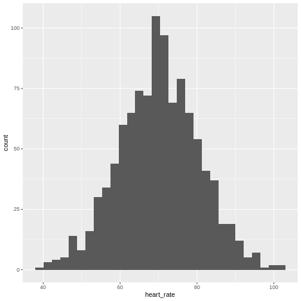
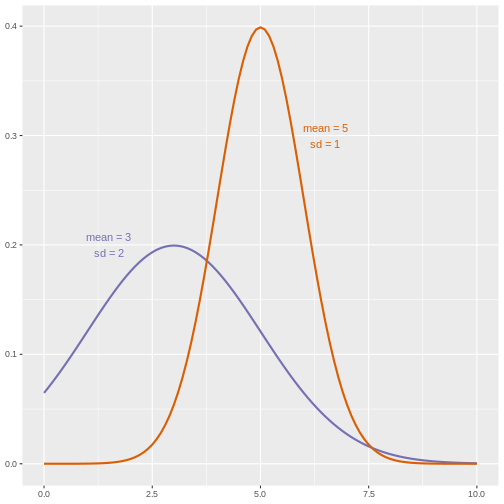
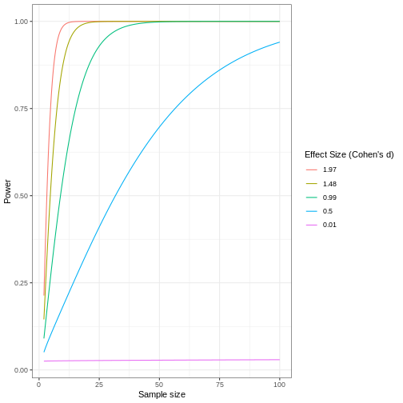

Statistics in Data Analysis
Last updated on 2024-05-02 | Edit this page
Overview
Questions
- How can information be extracted and communicated from experimental data?
Objectives
- Plotting reveals information in the data.
- Statistical significance testing compares experimental data obtained to probability distributions of data that might also be possible.
- A probability distribution is a mathematical function that gives the probabilities of different possible outcomes for an experiment.
A picture is worth a thousand words
To motivate this next section on statistics, we start with an example of human variability. This 1975 living histogram of women from the University of Wisconsin Madison shows variability in a natural population.

B. Joiner, Int’l Stats Review, 1975
Exercise 1: A living histogram
From the living histogram, can you estimate by eye
1). the mean and median heights of this sample of women?
2). the spread of the data? Estimate either standard deviation or
variance by eye. If you’re not sure how to do this, think about how you
would describe the spread of the data from the mean. You do not need to
calculate a statistic.
3). any outliers? Estimate by eye - don’t worry about
calculations.
4). What do you predict would happen to mean, median, spread and
outliers if an equal number of men were added to the histogram?
1). Mean and median are two measures of the center of the data. The median is the 50th% of the data with half the women above this value and the other half below. There are approximately 100 students total. Fifty of them appear to be above 5 feet 5 inches and fifty of them appear to be below 5’5”. The median is not influenced by extreme values (outliers), but the mean value is. While there are some very tall and very short people, the bulk of them appear to be centered around a mean of 5 foot 5 inches with a somewhat longer right tail to the histogram. 2). If the mean is approximately 5’5” and the distribution appears normal (bell-shaped), then we know that approximately 68% of the data lies within one standard deviation (sd) of the mean and ~95% lies within two sd’s. If there are ~100 people in the sample, 95% of them lie between 5’0” and 5’10” (2 sd’s = 5” above and 5” below the mean). One standard deviation then would be about 5”/2 = 2.5” from the mean of 5’5”. So 68% of the data (~68 people) lie within 5 feet 2.5 inches and 5 feet 7.5 inches. 3). There are some very tall and very short people but it’s not clear whether they are outliers. Outliers deviate significantly from expected values, specifically by more than 3 standard deviations in a normal distribution. Values that are greater than 3 sd’s (7.5”) above or below the mean could be considered outliers. Outliers would then be shorter than 4 feet 7.5 inches or taller than 6 feet 2.5 inches. The shortest are 4 feet 9 inches and the tallest 6’ 0 inches. There are no outliers in this sample because all heights fall within 3 sd’s. 4). Average heights for men are greater than average heights for women, so you could expect that a random sample of 100 men would increase the average height of the sample of 200 students. The mean would shift to the right of the distribution toward taller heights, as would the median.
The first step in data analysis: plot the data!
A picture is worth a thousand words, and a picture of your data could reveal important information that can guide you forward. So first, plot the data!
R
# read in the simulated heart rate data
heart_rate <- read.csv("data/heart_rate.csv")
# take a random sample of 100 and create a histogram
# first set the seed for the random number generator
set.seed(42)
sample100 <- sample(heart_rate$heart_rate, 100)
hist(sample100, xlab = "resting heart rate for 100 participants")

Exercise 2: What does this picture tell you about resting heart rates?
Do the data appear to be normally distributed? Why does this matter? Do the left and right tails of the data seem to mirror each other or not? Are there gaps in the data? Are there large clusters of similar heart rate values in the data? Are there apparent outliers? What message do the data deliver in this histogram?
Now create a boxplot of the same sample data.
R
boxplot(sample100)
Plotting the data can identify unusual response measurements (outliers), reveal relationships between variables, and guide further statistical analysis. When data are not normally distributed (bell-shaped and symmetrical), many of the statistical methods typically used will not perform well. In these cases the data can be transformed to a more symmetrical bell-shaped curve.
Random variables
The Generation 100 study aims to determine whether high-intensity exercise in elderly adults affects lifespan and healthspan.
R
# heart_rate ~ exercise_group is a formula indicating that the response (heart
# rate) is dependent on the treatment (exercise group)
boxplot(heart_rate ~ exercise_group, data = heart_rate)

Exercise 4: Comparing two groups - control vs. high intensity
- Does there appear to be a significant heart rate difference between the control and high intensity exercise groups? How would you know?
- Do any of the data overlap between the two boxplots?
- Can you know which exercise group a person belongs to just by knowing their heart rate? For example, for a heart rate of 80 could you say with certainty that a person belongs to one group or the other?
- There appears to be a trend of lower heart rate in the high-intensity exercise group, however, we can’t say whether or not it is significant without performing statistical tests.
- There is considerable overlap between the two groups, which shows that there is considerable variability in the data.
- Someone with a heart rate of 80 could belong to any group. When considering significance of heart rate differences between the two groups we don’t look at individuals, rather, we look at averages between the two groups.
The boxplots above show a trend of lower heart rate in the high-intensity exercise group and higher heart rate in the control exercise group. There is inherent variability in heart rate in both groups however, which is to be expected. That variability appears in the box and whisker lengths of the boxplots, along with any outliers that appear as hollow circles outside of the whisker length. This variability in heart rate measurements also means that the boxplots overlap between the two groups, making it difficult to determine whether there is a significant difference in mean heart rate between the groups.
We can calculate the difference in means between the two groups to answer the question about exercise intensity.
R
# calculate the means of the two groups
# load the tidyverse library to write more easily interpreted code
library(tidyverse)
HI <- heart_rate %>% filter(exercise_group == "high intensity")
control <- heart_rate %>% filter(exercise_group == "control")
meanDiff <- mean(control$heart_rate) - mean(HI$heart_rate)
The actual difference in mean heart rates between the two groups is 2.21. Another way of stating this is that the high-intensity group had a mean heart rate that was 3 percent lower than the control group. This is the observed effect size.
So are we done now? Does this difference support the alternative hypothesis that there is a significant difference in mean heart rates? Or does it fail to reject the null hypothesis of no significant difference? Why do we need p-values and confidence intervals if we have evidence we think supports our claim? The reason is that the mean values are random variables that can take many different values. We are working with two samples of elderly Norwegians, not the entire population of elderly Norwegians. The means are estimates of the true mean heart rate of the entire population, a number that we can never know because we can’t access the entire population of elders. The sample means will vary with every sample we take from the population. To demonstrate this, let’s take a sample from each exercise group and calculate the difference in means for those samples.
R
# calculate the sample mean of 100 people in each group
HI100 <- mean(sample(HI$heart_rate, size = 100))
control100 <- mean(sample(control$heart_rate, size = 100))
control100 - HI100
OUTPUT
[1] 1.556033Now take another sample of 100 from each group and calculate the difference in means.
R
# calculate the sample mean of 100 people in each group
HI100 <- mean(sample(HI$heart_rate, size = 100))
control100 <- mean(sample(control$heart_rate, size = 100))
control100 - HI100
OUTPUT
[1] 2.303506Are the differences in sample means the same? We can repeat this sampling again and again, and each time arrive at a different value. The sample means are a random variable, meaning that they can take on any number of different values. Since they are random variables, the difference between the means (the observed effect size) is also a random variable.
Supposing we did have access to the entire population of elderly Norwegians. Can we determine the mean resting heart rate for the entire population, rather than just for samples of the population? Imagine that you have measured the resting heart rate of the entire population of elders 70 or older, not just the 1,567 from the Generation 100 study. In practice we would never have access to the entire population, so this is a thought exercise.
R
# read in the heart rates of the entire population of all elderly people
population <- rbind(HI, control)
# sample 100 of them and calculate the mean three times
mean(sample(population$heart_rate, size = 100))
OUTPUT
[1] 69.39432R
mean(sample(population$heart_rate, size = 100))
OUTPUT
[1] 70.69518R
mean(sample(population$heart_rate, size = 100))
OUTPUT
[1] 69.51392Notice how the mean changes each time you sample. We can continue to do this many times to learn about the distribution of this random variable. Comparing the data obtained to a probability distribution of data that might have been obtained can help to answer questions about the effects of exercise intensity on heart rate.
The null hypothesis
Now let’s return to the mean difference between treatment groups. How do we know that this difference is due to the exercise? What happens if all do the same exercise intensity? Will we see a difference as large as we saw between the two treatment groups? This is called the null hypothesis. The word null reminds us to be skeptical and to entertain the possibility that there is no difference.
Because we have access to the population, we can randomly sample 100 controls to observe as many of the differences in means when exercise intensity has no effect. We can give everyone the same exercise plan and then record the difference in means between two randomly split groups of 100 and 100.
Here is this process written in R code:
R
## 100 controls
control <- sample(population$heart_rate, 100)
## another 100 controls that we pretend are on a high-intensity regimen
treatment <- sample(population$heart_rate, 100)
mean(control) - mean(treatment)
OUTPUT
[1] 1.041263Now let’s find the sample mean of 100 participants from each group 10,000 times.
R
treatment <- replicate(n = 10000, mean(sample(population$heart_rate, 100)))
control <- replicate(n = 10000, mean(sample(population$heart_rate, 100)))
null <- control - treatment
hist(null)
abline(v=meanDiff, col="red", lwd=2)

null contains the differences in means between the two
groups sampled 10,000 times each. The value of the observed difference
in means between the two groups, meanDiff, is shown as a
vertical red line. The values in null make up the
null distribution. How many of these differences are
greater than the observed difference in means between the actual
treatment and control groups?
R
mean(null >= meanDiff)
OUTPUT
[1] 0.0583Approximately 5.8% of the 10,000 simulations are greater than the observed difference in means. We can expect then that we will see a difference in means approximately 5.8% of the time even if there is no effect of exercise on heart rate. This is known as a p-value.
P-values are often misinterpreted as the probability that, in this example, high-intensity and control exercise result in the same average heart rate. However, “high-intensity and control exercise result in the same average heart rate” is not a random variable like the number of heads or tails in 10 flips of a coin. It’s a statement that doesn’t have a probability distribution, so you can’t make probability statements about it. The p-value summarizes the comparison between our data and the data we might have obtained from a probability distribution if there were no difference in mean heart rates. Specifically, the p-value tells us how far out on the tail of that distribution the data we got falls. The smaller the p-value, the greater the disparity between the data we have and the data distribution that might have been. To understand this better, we’ll explore probability distributions next.
The alternative hypothesis
We assume that our observations are drawn from a null distribution with mean μ0, which in this case equals zero because the null hypothesis states that there is no difference between the treatment groups. We reject the null hypothesis for values that fall within the region defined by α, they Type I error rate. If we have a value that falls within this region, it is possible to falsely reject the null hypothesis and to assume that there is a treatment effect when in reality none exists. False positives (Type I errors) are typically set at a low rate (0.05) in good experimental design so that specificity (1 - α) remains high. Specificity describes the likelihood of true negatives, or accepting the null hypothesis when it is true and correctly assuming that no effect exists.
{kind=link}

The alternative hypothesis challenges the null by stating that an effect exists and that the mean difference, μA, is greater than zero. The difference between μ0 and μA is known as the effect size, which is expressed in units of standard deviation: d = μA - μ0 / σ.
Probability and probability distributions
Suppose you have measured the resting heart rate of the entire
population of elderly Norwegians 70 or older, not just the 1,567 from
the Generation 100 study. Imagine you need to describe all of these
numbers to someone who has no idea what resting heart rate is. Imagine
that all the measurements from the entire population are contained in
population. We could list out all of the numbers for them
to see or take a sample and show them the sample of heart rates, but
this would be inefficient and wouldn’t provide much insight into the
data. A better approach is to define and visualize a
distribution. The simplest way to think of a
distribution is as a compact description of many numbers.
Histograms show us the proportion of values within an interval. Here is a histogram showing all resting heart rates for the entire population 70 and older.
R
population %>% ggplot(mapping = aes(heart_rate)) + geom_histogram()
 Showing this plot is much more informative and easier to interpret than a long table of numbers. With this histogram we can approximate the number of individuals in any given interval. For example, there are approximately 38 individuals (~2.4%) with a resting heart rate greater than 90, and another 44 individuals (~2.8%) with a resting heart rate below 50.
The histogram above approximates one that is very common in nature: the bell curve, also known as the normal distribution or Gaussian distribution.
The curve shown above is an example of a probability density
function that defines a normal distribution. The y-axis is the
probability density, and the total area under the curve
sums to 1.0 on the y-axis. The x-axis denotes a variable z that
by statistical convention has a standard normal distribution. If you
draw a random value from a normal distribution, the probability that the
value falls in a particular interval, say from a to b,
is given by the area under the curve between a and b.
When the histogram of a list of numbers approximates the normal
distribution, we can use a convenient mathematical formula to
approximate the proportion of values or outcomes in any given interval.
That formula is conveniently stored in the function
pnorm
If the normal approximation holds for our list of data values, then
the mean and variance (spread) of the data can be used. For example,
when we noticed that ~ 5.8% of the values in the null distribution were
greater than meanDiff, the mean difference between control
and high-intensity groups. We can compute the proportion of values below
a value x with pnorm(x, mu, sigma) where
mu is the mean and sigma the standard
deviation (the square root of the variance).
R
1 - pnorm(meanDiff, mean=mean(null), sd=sd(null))
OUTPUT
[1] 0.05742643A useful characteristic of this approximation is that we only need to
know mu and sigma to describe the entire
distribution. From this, we can compute the proportion of values in any
interval.
Real-world populations may be approximated by the mathematical ideal of the normal distribution. Repeat the sampling we did earlier and produce a new histogram of the sample.
R
sample100 <- sample(heart_rate$heart_rate, 100)
hist(sample100, xlab = "resting heart rate for 100 participants")
Exercise 6: Sampling from a population
- Does the sample appear to be normally distributed?
- Can you estimate the mean resting heart rate by eye?
- What is the sample mean using R (hint: use
mean())? - Can you estimate the sample standard deviation by eye? Hint: if
normally distributed, 68% of the data will lie within one standard
deviation of the mean and 95% will lie within 2 standard
deviations.
- What is the sample standard deviation using R (hint: use
sd())? - Estimate the number of people with a resting heart rate between 60
and 70.
- What message does the sample deliver about the population from which it was drawn?
If you have doubts about whether the sample follows a normal distribution, a quantile-quantile (QQ) plot can make interpretation easier.
R
qqnorm(sample100)
qqline(sample100)

We can use qq-plots to confirm that a distribution is relatively close to normally distributed. A qq-plot compares data on the y-axis against a theoretical distribution on the x-axis. If the data points fall on the identity line (diagonal line), then the data is close to the theoretical distribution. The larger the sample, the more forgiving the result is to the weakness of this normal approximation. For small sample sizes, the t-distribution works well.
Statistical significance testing: the t-test
Significance testing can answer questions about differences between the two groups in light of inherent variability in heart rate measurements. What does it mean that a difference is statistically significant? We can eye plots like the boxplots above and see a difference, however, we need something more objective than eyeballs to claim a significant difference. A t-test will report whether the difference in mean values between the two groups is significant. The null hypothesis would state that there is no difference in mean values, while the alternative hypothesis states that there is a difference in the means of the two samples from the whole population of elders in Norway.
R
# provide a formula stating that heart rate is dependent on exercise intensity
t.test(formula = heart_rate ~ exercise_group, data = population)
OUTPUT
Welch Two Sample t-test
data: heart_rate by exercise_group
t = 4.3418, df = 1563.5, p-value = 1.504e-05
alternative hypothesis: true difference in means between group control and group high intensity is not equal to 0
95 percent confidence interval:
1.210325 3.205063
sample estimates:
mean in group control mean in group high intensity
70.99996 68.79227 The perils of p-values
You can access the p-value alone from the t-test by saving the
results and accessing individual elements with the $
operator.
R
# save the t-test result and access the p-value alone
result <- t.test(formula = heart_rate ~ exercise_group, data = population)
result$p.value
OUTPUT
[1] 1.504139e-05The p-value indicates a statistically significant difference between exercise groups. It is not enough, though, to report only a p-value. The p-value says nothing about the effect size (the observed difference). If the effect size was tiny, say .01 or less, would it matter how small the p-value is? The effect is negligible, so the p-value does nothing to demonstrate practical relevance or meaning. We should question how large the effect is. The p-value can only tell us whether an effect exists.
A p-value can only tell us whether an effect exists. However, a p-value greater than .05 doesn’t mean that no effect exists. The value .05 is rather arbitrary. Does a p-value of .06 mean that there is no effect? It does not. It would not provide evidence of an effect under standard statistical protocol. Absence of evidence is not evidence of absence. There could still be an effect.
Confidence intervals
P-values report statistical significance of an effect, but what we want is scientific significance. Confidence intervals include estimates of the effect size and uncertainty associated with these estimates. When reporting results, use confidence intervals.
R
# access the confidence interval
result$conf.int
OUTPUT
[1] 1.210325 3.205063
attr(,"conf.level")
[1] 0.95The confidence interval states that the true difference in means is between 1.21 and 3.21. We can say, with 95% confidence, that high intensity exercise could decrease mean heart rate from 1.21 to 3.21 beats per minute. Note that these are simulated data and are not the outcomes of the Generation 100 study.
A 95% confidence interval states that 95% of random intervals will contain the true value. This is not the same as saying that there is a 95% chance that the true value falls within the interval. The graphic below helps to explain a 95% confidence interval for the mean population heart rate.

If we generate 200 confidence intervals for the mean population heart rate, those confidence intervals will include the mean (vertical gray dotted line) approximately 95% of the time. You will see that about 5% of the confidence intervals (shown in red) fail to cover the mean.
Exercise 7: Explaining p-values and confidence intervals
For each statement, explain to a partner why you believe the statement is true or untrue.
- A p-value of .02 means that there is only a 2% chance that high-intensity and control exercise result in the same average heart rate.
- A p-value of .02 demonstrates that there is a meaningful difference in average heart rates between the two groups.
- A 95% confidence interval has a 95% chance of containing the true difference in means.
- A confidence interval should be reported along with the p-value.
Comparing standard deviations
When comparing the means of data from the two groups, we need to ask whether these data have equal variances (spreads). Previous studies and prior knowledge can help us with this assumption. If we know from previous data or from our own expertise that adjusting a treatment will affect the mean response but not its variability, then we can assume equal variances.

However, if we suspect that changing a treatment will affect not only mean response but also its variability, we will be as interested in comparing standard deviations (the square root of the variance) as we are in comparing means.
 As a rule of thumb, if the ratio of the larger variance to the smaller variance is less than 4, the groups have equal variances.
R
heart_rate %>% group_by(exercise_group) %>%
summarise_at(vars(heart_rate),
list(variance = var, standard_deviation = sd))
OUTPUT
# A tibble: 2 × 3
exercise_group variance standard_deviation
<chr> <dbl> <dbl>
1 control 103. 10.2
2 high intensity 99.3 9.97A more formal approach uses an F test to compare variances between samples drawn from a normal population.
R
var.test(heart_rate ~ exercise_group, data = heart_rate)
OUTPUT
F test to compare two variances
data: heart_rate by exercise_group
F = 1.0378, num df = 782, denom df = 782, p-value = 0.6041
alternative hypothesis: true ratio of variances is not equal to 1
95 percent confidence interval:
0.901964 1.194081
sample estimates:
ratio of variances
1.037795 The F test reports that the variances between the groups are not the same, however, the ratio of variances is very close to 1.
Sample sizes and power curves
Statistical power analysis is an important preliminary step in experimental design. Sample size is an important component of statistical power (the power to detect an effect). To get a better sense of statistical power, let’s simulate a t-test for two groups with different means and equal variances.
R
set.seed(1)
n_sims <- 1000 # we want 1000 simulations
p_vals <- c() # create a vector to hold the p-values
for(i in 1:n_sims){
group1 <- rnorm(n=30, mean=1, sd=2) # simulate group 1
group2 <- rnorm(n=30, mean=0, sd=2) # simulate group 2
# run t-test and extract the p-value
p_vals[i] <- t.test(group1, group2, var.equal = TRUE)$p.value
}
mean(p_vals < .05) # check power (i.e. proportion of p-values that are smaller
OUTPUT
[1] 0.478R
# than alpha-level of .05)
Let’s calculate the statistical power of our experiment so far, and then determine the sample size we would need to run a similar experiment on a different population.
R
# sample size = 783 per group
# delta = the observed effect size, meanDiff
# sd = standard deviation
# significance level (Type 1 error probability or
# false positive rate) = 0.05
# type = two-sample t-test
# What is the power of this experiment to detect
# an effect of size meanDiff?
power.t.test(n = 783, delta = meanDiff, sd = sd(heart_rate$heart_rate),
sig.level = 0.05, type = "two.sample")
OUTPUT
Two-sample t test power calculation
n = 783
delta = 2.207694
sd = 10.11813
sig.level = 0.05
power = 0.9907288
alternative = two.sided
NOTE: n is number in *each* groupIn biomedical studies, statistical power of 80% (0.8) is an accepted standard. If we were to repeat the experiment with a different population of elders (e.g. Icelandic elders), what is the minimum sample size we would need for each exercise group?
R
# delta = the observed effect size, meanDiff
# sd = standard deviation
# significance level (Type 1 error probability or false positive rate) = 0.05
# type = two-sample t-test
# What is the minimum sample size we would need at 80% power?
power.t.test(delta = meanDiff, sd = sd(heart_rate$heart_rate),
sig.level = 0.05, type = "two.sample", power = 0.8)
OUTPUT
Two-sample t test power calculation
n = 330.6946
delta = 2.207694
sd = 10.11813
sig.level = 0.05
power = 0.8
alternative = two.sided
NOTE: n is number in *each* groupAs a rule of thumb, Lehr’s equation streamlines calculation of sample size assuming equal variances and sample sizes drawn from a normal distribution. The effect size is standardized by dividing the difference in group means by the standard deviation. Cohen’s d describes standardized effect sizes from 0.01 (very small) to 2.0 (huge).
R
# n = (16/delta squared), where delta is the standardized effect size
# delta = effect size standardized as Cohen's d
# (difference in means)/(standard deviation)
standardizedEffectSize <- meanDiff/sd(heart_rate$heart_rate)
n <- 16/standardizedEffectSize^2
n
OUTPUT
[1] 336.08Often budget constraints determine sample size. Lehr’s equation can be rearranged to determine the effect size that can be detected for a given sample size.
R
# difference in means = (4 * sd)/(square root of n)
# n = 100, the number that I can afford
SD <- sd(heart_rate$heart_rate)
detectableDifferenceInMeans <- (4 * SD)/sqrt(100)
detectableDifferenceInMeans
OUTPUT
[1] 4.047251Try increasing or decreasing the sample size (100) to see how the detectable difference in mean changes. Note the relationship: for very large effects, you can get away with smaller sample sizes. For small effects, you need large sample sizes.
A power curve can show us statistical power based on sample size and effect size. Review the following figures to explore the relationships between effect size, sample size, and power. What is the relationship between effect size and sample size? Between sample size and power? What do you notice about effect size and power as you increase the sample size?


 Code adapted from Power
Curve in R by Cinni Patel.
Code adapted from Power
Curve in R by Cinni Patel.
Review the following figure to explore the relationships between effect size, sample size, and power. What is the relationship between effect size and sample size? Between sample size and power?
 Code adapted from How to Create Power Curves in ggplot by Levi Baguley
Notice that to detect a standardized effect size of 0.5 at 80% power, you would need a sample size of approximately 70. Larger effect sizes require much smaller sample sizes. Very small effects such as .01 never reach the 80% power threshold without enormous samples sizes in the hundreds of thousands.